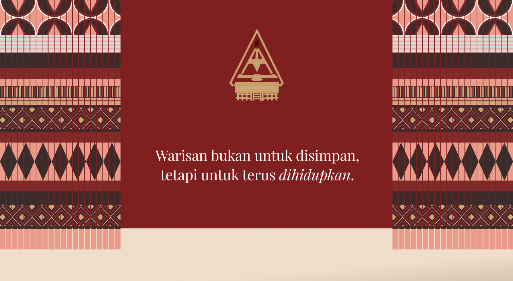
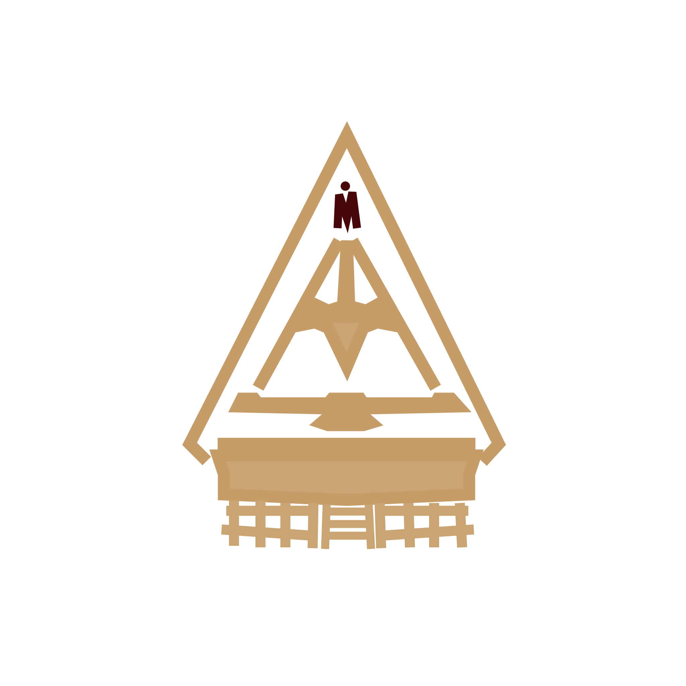
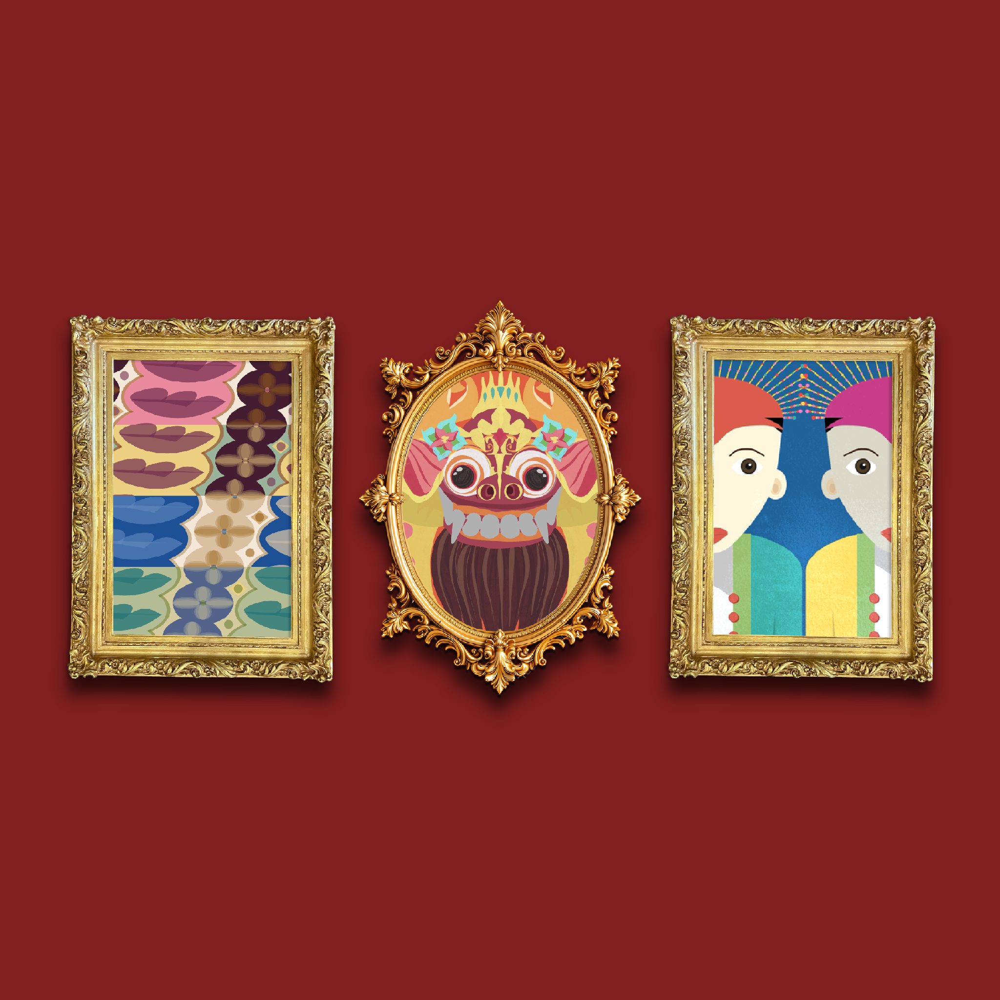

Preserving culture doesn't have to mean archiving it. It can mean new ways to experience it.
Heritage, behind glass.
Indonesian traditions are rich with stories, symbols and craft. But online, they mostly live as photos and text, which feels distant to younger, digitally native audiences. You can read about batik anywhere. You rarely get to play with it.
How might we preserve Indonesian cultural heritage while making it feel engaging, accessible and relevant in a digital world?
Three traditions, three ways in.
I chose traditions with strong visual languages, then asked what each one does best: move, tell a story, or repeat as pattern. That quality became its interaction.
Ondel-ondel
Giant paraded figures, traditionally believed to ward off bad spirits.
Explored through animated narrativeBarong
A protective spirit at the center of a dance of good against evil.
Explored through interactive visualsBatik
Wax-resist cloth where every motif holds meaning.
Explored through generative patternsMake heritage approachable to digital audiences.
Preserve cultural stories through new media.
Turn traditional visual systems into interaction.
Reinterpret culture without losing its identity.
Reimagine, don't just archive.
Merangkai means "to string together." The gallery connects tradition and technology: visitors explore Ondel-ondel, Barong and batik through animated stories, interactive visuals and generative patterns, so each tradition is something you experience, not just read about.

Built with React, Vite, p5.js, Processing, Figma and Lottie. Deployed on Vercel.
What I chose, and what I cut.
Depth over breadth
Three traditions, each built out fully, instead of a wide archive that only shows photos and captions.
Reinterpret, stay recognizable
Generative art invites new forms, but each piece keeps the original motifs readable so the tradition is never lost in the effect.
Atmosphere vs. speed
An animated Lottie intro sets the mood before the gallery opens. It adds a moment of load time, but frames the site as an experience, not a database.
How I'd know it works.
Merangkai is an experience, not a task-based tool, so "did they finish the flow" isn't the right test. These are the signals I'd track instead.
Do visitors stay and interact, or just scroll past?
Time spent and interactions per tradition, compared with a static page of the same content.
Can someone explain what Barong stands for afterward?
A one-question recall check at the end. Engagement without understanding would mean the art overshadowed the culture.
Do Indonesian visitors see home in it?
Feedback from people who grew up with these traditions is the real check that the reinterpretation stayed true.
What I learned
Small details break real launches. A filename casing mismatch worked on my Mac but failed Vercel's Linux build, so now I test the production build before shipping.
What I'd measure
Whether understanding keeps up with engagement. If people play but can't say what they saw, the gallery needs more story.
What's next
More traditions from other islands, and sharing the gallery with Indonesian communities abroad for feedback.

